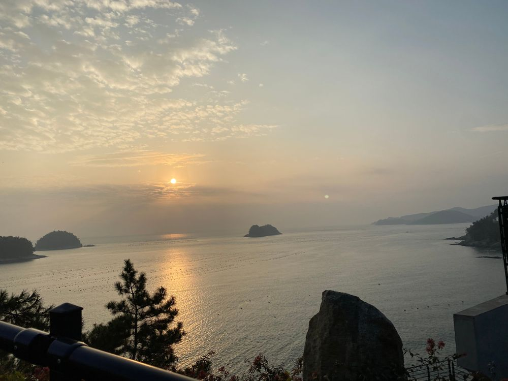

こんばんは🌝
ひいだよ🍓

明け方の海〜！
今日は雨☂️
なんか湿っぽくてムシムシしてる。。？
이호のところはどうかな？
そして今日18時には
D-D-DANCEが解禁されました🎧
これからオフショットも載せていきますね💭
ぜひたくさん聴いてください〜
それからきのうの夜よく眠れなくて
音楽をかけていたらすごくいい歌見つけました
back numberさんの「水平線」っていう曲
歌詞がとても良くて
とても心に沁みて
素敵な曲だなあって思いました。
「心は誰にも見えないのだから
見えるものより大事にするといい」
ここの歌詞がとくに好きです
まだ聴いたことないよって方も聴いたことある方も
ぜひ聴いてみてください😌
오늘은 비가 오네...
어제까지 너무 좋았었는데ㅜ
우산 꼭 챙겨야 돼!
TMI💡
손톱 너무 길어서 좀 깨졌어><
슬슬 진짜 수명이...ㅎ
추천메뉴는...
쌀국수🍜
비가 오는 날엔 뭐 먹어요 라고 물어봤더니
안무쌤은 쌀국수 먹는다고 말하셨는데
매니저님은 칼국수 라고 하시네...
이호 알려줘ㅎ

これは夜景
綺麗な夜景が見たいなあ💭
ばいばーい👋🏻
ひいまる🥟